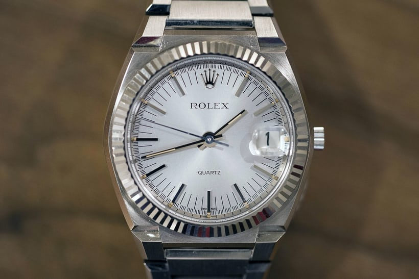

There are two main watch movements; automatic watches and quartz watches.

Quartz watches are powered by a battery and are usually extremely accurate. Automatic watches to not have a battery and are powered by a wound spring. Depending on the watch, the spring can get self wound if it is on someone's hand, or it can get manually wound by turning the crown of the watch.
Image credits: Automatic: https://www.hodinkee.com/articles/best-mechanical-watches-under-1000-seiko-hamilton-tissot Quartz: https://www.hodinkee.com/articles/four-revolutions-quartz-revolution